Φιλοσοφία
Η φιλοσοφία μας είναι πάνω από όλα το χαμόγελο των παιδιών καθώς και το ήθος τους! Με αυτό τον τρόπο μαθαίνουμε στα παιδιά από μικρή ηλικία να γίνουν πραγματικοί αθλητές εντός & εκτός γηπέδου!
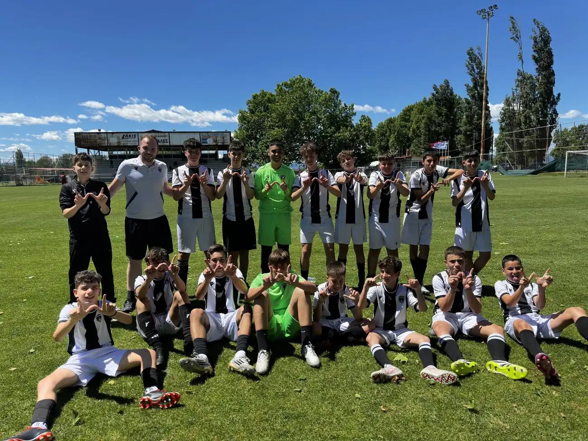
Το ποδόσφαιρο αλλιώς!
Τμήματα υποδομών για παιδιά 4 έως 17 ετών, με προπονητές UEFA, αγώνες κάθε Σαββατοκύριακο και μια ομάδα που μαθαίνει τις αξίες της ζωής μέσα από το ποδόσφαιρο.
Η φιλοσοφία μας είναι πάνω από όλα το χαμόγελο των παιδιών καθώς και το ήθος τους! Με αυτό τον τρόπο μαθαίνουμε στα παιδιά από μικρή ηλικία να γίνουν πραγματικοί αθλητές εντός & εκτός γηπέδου!
Αποστολή μας είναι να εμπνέουμε, να παρακινούμε και να καθοδηγούμε τα παιδιά να εξελίσσουν το χαρακτήρα τους αποκτώντας έτσι τα σημαντικότερα εφόδια για την πορεία της ζωής τους.
Με αυτοπεποίθηση, επιμονή, υπομονή και αγωνιστικότητα να μαθαίνουν να κατακτούν τους προσωπικούς τους στόχους και να συνεργάζονται για την επίτευξη ομαδικών σκοπών.
Κάθε παιδί βρίσκει τη θέση του: είτε μόλις κάνει τα πρώτα του βήματα με την μπάλα, είτε θέλει να γυμνάζεται και να περνά καλά με τους φίλους του, είτε να αγωνίζεται.
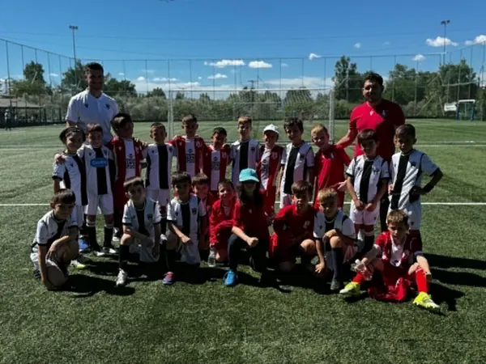
Για τους μικρούς μας, γεννημένους το 2022 και νεότερους, από 4 ετών. Η πρώτη τους επαφή με την μπάλα, με παιχνίδι και πολύ γέλιο.
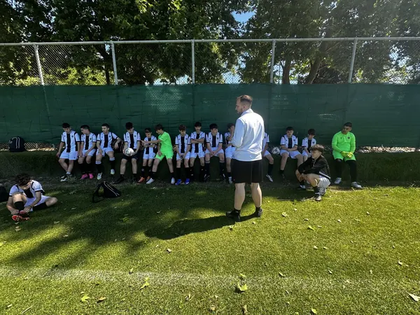
Ποδόσφαιρο για την κίνηση, την παρέα και τη χαρά του παιχνιδιού. Το παιδί μαθαίνει τεχνική και ομαδικότητα με τον δικό του ρυθμό.
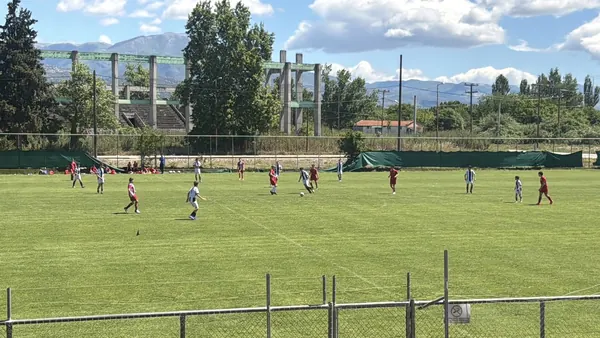
Για παιδιά που θέλουν να παίζουν σε αγώνες. Κατηγορίες από U8 έως U17: φιλικοί αγώνες και Πρωτάθλημα ΕΠΣΜ, με παιχνίδια κάθε Σαββατοκύριακο.
Διαλέξτε τη χρονιά γέννησης του παιδιού και δείτε την κατηγορία του για τη σεζόν 2026/27.
Ενδεικτικά: η τελική ομάδα ορίζεται μαζί με τον προπονητή, ανάλογα με το επίπεδο και την ηλικία του παιδιού.
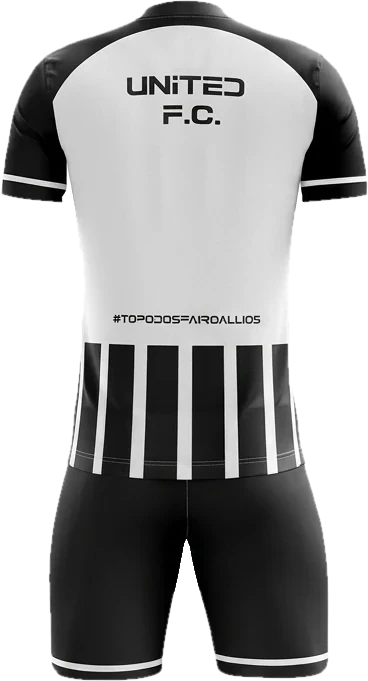
Αγωνιστικό ή μαζικού αθλητισμού: διαλέγετε εσείς μαζί με το παιδί.
Κλείστε δοκιμαστική προπόνησηΈλα κι εσύ να γνωρίσουμε μαζί τις αξίες της ζωής. Στη United Kalamaria το ποδόσφαιρο είναι το μέσο: μαθαίνουμε να κερδίζουμε με σεβασμό, να χάνουμε όρθιοι και να είμαστε πάντα ομάδα.
Προπονητές με διπλώματα UEFA A, B και C δουλεύουν κάθε εβδομάδα με τα παιδιά μας, από τους «Τεράστιους» μέχρι τους U17.
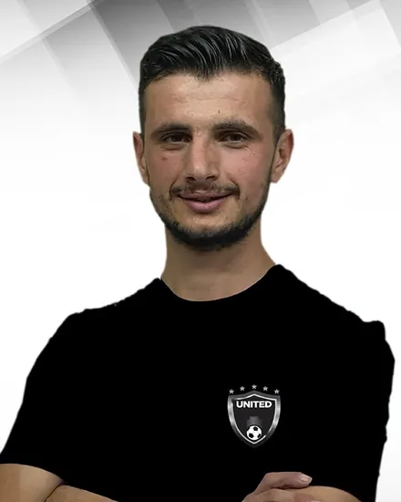
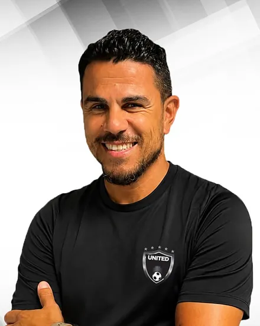
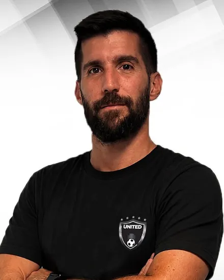
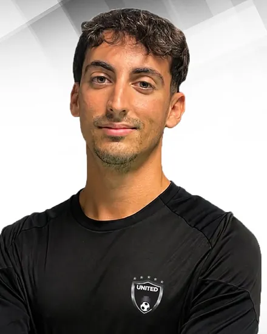
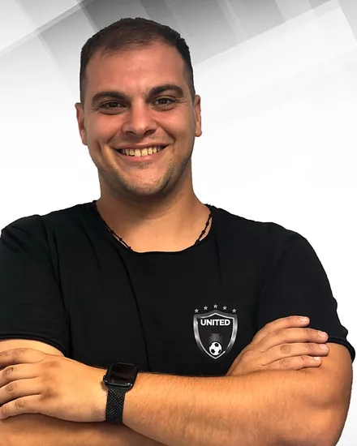
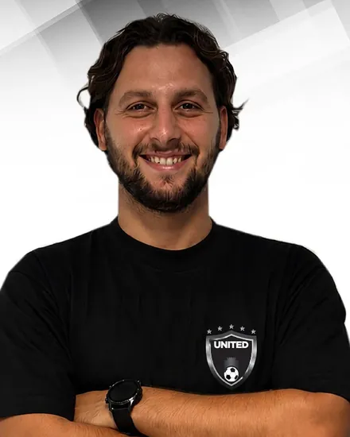
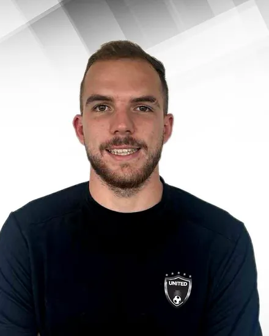
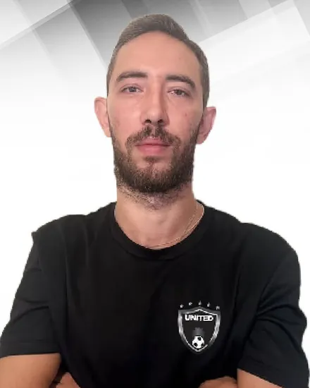
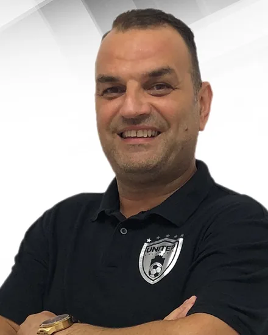
Ξεκινάμε στα τέλη Αυγούστου: ξανά στο γήπεδο, με νέες ομάδες και πολλή όρεξη.
Προετοιμασία με τις ομάδες μας σε ξενοδοχείο: προπόνηση, γυμναστήριο και πολύ δέσιμο.
Τον Σεπτέμβριο ξεκινάμε πρώτα με φιλικούς αγώνες και μετά ξεκινάει το Πρωτάθλημα ΕΠΣΜ, με αγώνες κάθε Σαββατοκύριακο για όλες τις κατηγορίες.
Παρελαύνουμε στην Καλαμαριά με τα ασπρόμαυρα της United.
Όλα τα τμήματα μαζί, με παιχνίδια στο γήπεδο και επίσκεψη του Άη Βασίλη.
Το αποκριάτικο πάρτι μας: μασκαράδες, παιχνίδι και πολύ γέλιο για όλα τα παιδιά.
Με τη σημαία μπροστά, παρελαύνουμε στην εθνική γιορτή όλοι μαζί.
Ταξιδεύουμε με το λεωφορείο της ομάδας σε τουρνουά εντός και εκτός Θεσσαλονίκης και κάνουμε την ημερήσια εκδρομή μας.
Τα παιδιά που μεγάλωσαν στην ακαδημία ανεβαίνουν στην ανδρική μας ομάδα, τη Μ.Α.Ο. Αναγέννηση Αγ. Ιωάννη.
Χριστούγεννα, Απόκριες, παρελάσεις στις εθνικές εορτές: κάθε χρονιά τα παιδιά απ’ όλα τα τμήματα, οι γονείς και οι προπονητές μας γίνονται μια μεγάλη παρέα.
Όλα τα τμήματα μαζί στο γήπεδο, με παιχνίδια, δώρα και τον Άη Βασίλη.
Μασκαράδες, παιχνίδι και πολύ γέλιο: το πάρτι μας για όλα τα παιδιά της ακαδημίας.
Με τη σημαία μπροστά, όλα τα τμήματα παρελαύνουν στην εθνική γιορτή.
Τα παιδιά μας ταξιδεύουν και παίζουν σε τουρνουά με ακαδημίες μεγάλων ομάδων, όπως της ΑΕΚ, του Πανσερραϊκού και της Λάρισας. Νέα γήπεδα, νέοι αντίπαλοι, μετάλλια και αναμνήσεις που μένουν.
Την ίδια χρονιά με την ακαδημία, το 2018, «χτίστηκε» και η ανδρική μας ομάδα, η Μ.Α.Ο. Αναγέννηση Αγ. Ιωάννη. Σήμερα στελεχώνεται και από παιδιά της ακαδημίας μας και αγωνίζεται εδώ και 5 χρόνια στην Α΄ Ερασιτεχνική κατηγορία.
Ενότητα | Πάθος | Πίστη | Νίκες
Εκδηλώσεις τα Χριστούγεννα και τις Απόκριες, συμμετοχή σε τουρνουά εντός και εκτός Θεσσαλονίκης, παρέλαση στις εθνικές εορτές, συνεχής εκπαίδευση του team της ομάδας. Παίζουμε σε γήπεδα σε όλη την Ελλάδα: από το προπονητικό κέντρο της ΑΕΚ μέχρι τον Πανσερραϊκό και τη Λάρισα.
Οι καλύτεροι με διαφορά!!!!!!
οι καλύτεροι!!!!!!!!!!
ΟΤΙ ΚΑΛΥΤΕΡΟ ΥΠΑΡΧΕΙ ΣΤΟΝ ΧΩΡΟ ΤΟΥ ΠΟΔΟΣΦΑΙΡΟΥ !!!
ΟΝΕΙΡΟ ΖΩ ΜΗΝ ΜΕ ΞΥΠΝΑΤΕ.
..... τέλειος!!!!! το συστήνουμε ανεπιφύλακτα.
United Kalamaria Football Academy · ακαδημία ποδοσφαίρου στην Καλαμαριά Θεσσαλονίκης · Δημοτικό Γήπεδο Καλαμαριάς «Αριστοτέλης», Πόντου & Αγίου Νικολάου, Καλαμαριά 551 32 · παιδιά 4–17 ετών · αγωνιστικά τμήματα, μαζικού αθλητισμού και τμήμα «Τεράστιοι» (γεννημένοι 2022 και νεότεροι, δωρεάν η χρονιά) · προπονητές UEFA A, B, C · ανδρική ομάδα Μ.Α.Ο. Αναγέννηση Αγ. Ιωάννη (Α΄ Ερασιτεχνική) · τηλ. 695 123 4241 και 694 711 9758.
Από 4 ετών, στο τμήμα «Τεράστιοι» για παιδιά γεννημένα το 2022 και νεότερα. Τα τμήματα υποδομών μας καλύπτουν όλες τις ηλικίες από 4 έως 17 ετών.
Για τη σεζόν 2026/27 το τμήμα «Τεράστιοι» είναι δωρεάν όλη τη χρονιά. Για τα υπόλοιπα τμήματα πάρτε μας τηλέφωνο και θα σας πούμε όλες τις λεπτομέρειες.
Ναι. Καλέστε μας στο 695 123 4241 ή στο 694 711 9758 και κλείνουμε μια δοκιμαστική προπόνηση, για να γνωρίσει την ομάδα και τους προπονητές.
Τα αγωνιστικά τμήματα παίζουν τακτικά σε αγώνες κάθε Σαββατοκύριακο. Τα τμήματα μαζικού αθλητισμού είναι για παιδιά που θέλουν να γυμναστούν, να μάθουν ποδόσφαιρο και να περάσουν καλά, χωρίς το άγχος του αποτελέσματος.
Κάθε Σαββατοκύριακο σε γήπεδα σε όλη τη Θεσσαλονίκη, όπως η έδρα μας, το Δημοτικό Γήπεδο Καλαμαριάς «Αριστοτέλης». Το πρόγραμμα κάθε εβδομάδας το ανεβάζουμε στο Facebook και στο Instagram μας.
Όλοι οι προπονητές μας έχουν δίπλωμα προπονητή UEFA: A, B ή C.
Ναι. Η ανδρική μας ομάδα είναι η Μ.Α.Ο. Αναγέννηση Αγ. Ιωάννη, που αγωνίζεται στην Α΄ Ερασιτεχνική κατηγορία και στελεχώνεται και από παιδιά της ακαδημίας μας. Για τη σεζόν 2026/27 επτά παιδιά από την ακαδημία μας ανέβηκαν στην ανδρική ομάδα.
Ναι, πολλές: εκδηλώσεις τα Χριστούγεννα και τις Απόκριες, συμμετοχή σε τουρνουά εντός και εκτός Θεσσαλονίκης, παρέλαση στις εθνικές εορτές, συνεχής εκπαίδευση του team της ομάδας κ.λπ.
Πάρτε μας τηλέφωνο ή στείλτε μας e-mail: κλείνουμε μαζί μια δοκιμαστική προπόνηση για το παιδί σας.